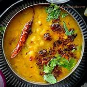
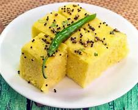
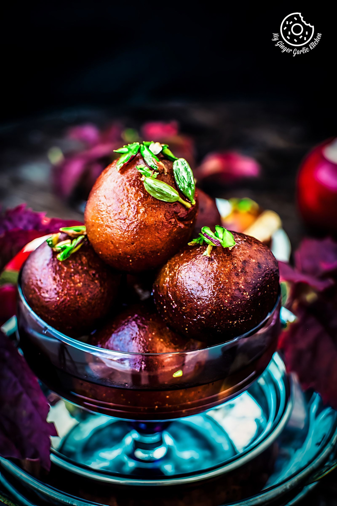
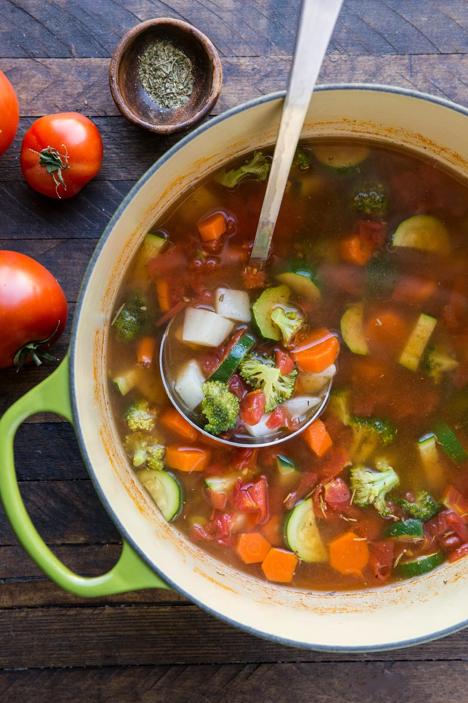

About Us
Welcome to our recipe website, where culinary inspiration meets delicious creations! Whether you're a seasoned chef or a passionate home cook, we are here to ignite your taste buds and guide you on a delightful culinary journey. Our extensive collection of recipes covers a wide range of cuisines, from comforting classics to innovative fusion dishes. Each recipe is thoughtfully crafted, tested, and presented with step-by-step instructions, ensuring that even the novice cook can create extraordinary meals.
Recipes

Paneer Tikka
Ingredients:
- 250g paneer, cubed
- 1 cup yogurt
- 2 tbsp ginger-garlic paste
- 1 tsp garam masala
- 1 tsp turmeric powder
- 1 tsp red chili powder
- Salt to taste
Instructions:
- Mix yogurt with spices to make marinade
- Add paneer cubes and marinate for 2 hours
- Thread paneer onto skewers
- Grill or bake until golden brown
- Serve hot with mint chutney

Dal-Tadka
- 1 cup toor dal (pigeon pea lentils)
- 3 cups water
- 1 medium onion, chopped
- 2 tomatoes, chopped
- 1 green chili, chopped
- 1 tbsp ginger-garlic paste
- 1/2 tsp turmeric powder
- 1 tsp red chili powder
- 1 tsp cumin seeds
- 1/2 tsp mustard seeds
- 2 tbsp ghee or oil
- 1/2 tsp garam masala
- Salt to taste
- 2 tbsp chopped coriander leaves
- 1 dried red chili
- 1/2 tsp hing (asafoetida)
Instructions:
- Rinse and pressure cook the toor dal with turmeric and water until soft.
- Mash the cooked dal and keep it aside.
- Heat ghee in a pan, add mustard seeds and cumin seeds.
- Once they splutter, add chopped onions and sauté until golden.
- Add ginger-garlic paste, green chili, and tomatoes. Cook until soft.
- Add red chili powder, salt, and garam masala, then mix well.
- Pour the cooked dal into the pan and simmer for a few minutes.
- For tadka, heat ghee in another pan, add dried red chili, hing, and cumin seeds.
- Pour the tadka over the dal and mix well.
- Garnish with coriander leaves and serve hot with rice or roti.
Paneer samosa
Ingredients:
- 2 cups all-purpose flour
- 4 tbsp oil
- 1/2 tsp salt
- 3 boiled potatoes, mashed
- 1/2 cup green peas
- 1 tsp cumin seeds
- 1 tsp garam masala
- 1/2 tsp turmeric & red chili powder
- 1/2 tsp amchur (dry mango powder)
- Salt to taste
- Oil for frying
Instructions:
- Knead flour, salt, and oil into a firm dough. Rest for 30 mins.
- Heat oil, add cumin, potatoes, peas, and spices. Cook & cool.
- Roll dough into ovals, cut in half, form cones, and fill.
- Seal edges, deep-fry until golden brown.
- Serve hot with chutney.

khaman
<
Ingredients:
- 1 cup besan
- 1/2 cup water
- 1 tbsp lemon juice
- 1 tsp sugar
- 1/2 tsp turmeric
- 1 tsp eno (fruit salt)
- Salt to taste
- 1 tsp mustard seeds
- 1 tbsp oil
- 8-10 curry leaves
- 2 green chilies, slit
- 1/2 cup water (for tempering)
- 2 tbsp coriander
Instructions:
- Mix besan, water, lemon juice, sugar, turmeric, and salt.
- Add eno, mix, and steam for 15-20 mins.
- Temper mustard seeds, curry leaves, and chilies in oil.
- Pour over khaman, garnish with coriander, and serve.

Gulab Jambu
Ingredients:
- 1 cup milk powder
- 1/4 cup all-purpose flour
- 1/4 tsp baking soda
- 2 tbsp ghee
- 1/4 cup milk (as needed)
- Oil or ghee for frying
- 1 cup sugar
- 1/2 cup water
- 1/2 tsp cardamom powder
- Few saffron strands (optional)
Instructions:
- Mix milk powder, flour, baking soda, and ghee.
- Add milk gradually to form a soft dough. Rest for 10 mins.
- Make small balls and deep-fry on low heat until golden.
- Boil sugar, water, cardamom, and saffron for syrup.
- Soak fried balls in warm syrup for 1-2 hours.
- Serve warm or chilled.

Lachcha Paratha
Ingredients:
- 2 cups whole wheat flour
- 1/2 cup water (as needed)
- 2 tbsp ghee or oil
- 1/2 tsp salt
- Extra flour for rolling
- Ghee for cooking
Instructions:
- Knead flour, salt, water, and ghee into a soft dough. Rest for 30 mins.
- Roll into a thin circle, spread ghee, and fold like a fan.
- Roll into a spiral, flatten, and roll again into a paratha.
- Cook on a hot tawa, applying ghee, until golden and crisp.
- Serve hot with curry or yogurt.

Vagetable Soup
Ingredients:
- 1 tbsp oil or butter
- 1 onion, chopped
- 2 garlic cloves, minced
- 1 carrot, diced
- 1/2 cup cabbage, shredded
- 1/2 cup beans, chopped
- 1/2 cup bell peppers, diced
- 4 cups vegetable broth or water
- 1 tsp black pepper
- 1 tsp soy sauce (optional)
- Salt to taste
- 2 tbsp coriander leaves
Instructions:
- Heat oil, sauté onion and garlic until fragrant.
- Add carrot, cabbage, beans, and bell peppers. Cook for 2 mins.
- Pour in broth, add salt, pepper, and soy sauce.
- Simmer for 10-15 mins until veggies are tender.
- Garnish with coriander and serve hot.
Special veg Thali
Ingredients:
- 1 cup basmati rice
- 1 cup wheat flour (for rotis)
- 1/2 cup toor dal (for dal)
- 1 cup mixed vegetables (carrot, beans, peas, potato)
- 1 onion, chopped
- 2 tomatoes, chopped
- 2 garlic cloves, minced
- 1 tsp cumin seeds
- 1/2 tsp turmeric
- 1 tsp red chili powder
- 1/2 tsp garam masala
- 2 tbsp ghee or oil
- Salt to taste
- Pickle, salad, and curd for serving
Instructions:
- Cook rice and prepare soft dough for rotis.
- Boil dal with turmeric and salt, then temper with ghee, cumin, and garlic.
- Sauté onion, tomatoes, and mixed veggies with spices. Cook until tender.
- Roll and cook rotis on a hot tawa.
- Serve everything with pickle, salad, and curd.
Categories
Contact Us
Contact Information
Address: 123 Main Street, City, Country
Phone: 1234567890
Email: info@flavorsomerecipes.com